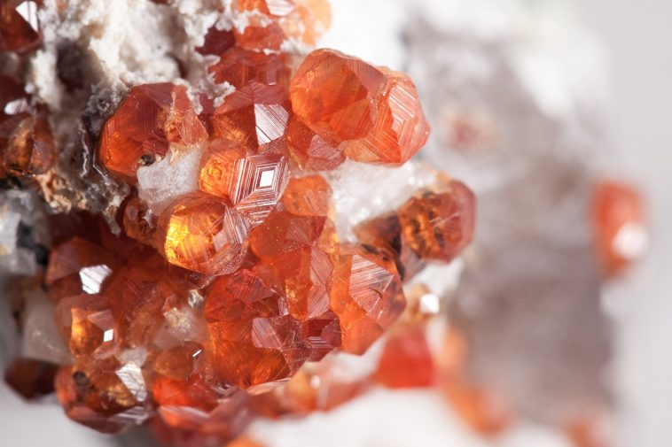

New here?

New to rockhounding and don't know where to start? Not to worry, we will show you the ropes. Click below to head over to our "Getting Started" guide
Getting StartedRocks & Minerals In Washington


Washington rockhounding maps to hunt for crystals, gemstones, minerals, and ores. Washington has some amazing rockhounding to offer. With its diverse geology, including the Cascade Range, Columbia River Basalt Group, and fossil-rich sites, the state provides a wide range of rocks, minerals, and fossils for enthusiasts to discover. From beautiful zeolite minerals to ancient plant and insect fossils, there is no shortage of treasures for rockhounds to explore in Washington.
Shop Our Merch!

We have tons of cool t-shirts, hats, water bottles, and stickers. Show off your love for rockhounding with our high-quality merchandise.
Visit StorePlease always bring appropriate attire and do research before venturing out to rock hunt and crystal hunt. Also, be sure to verify that the location you want to hunt at is available for public access. Rockhounding.org does our best to verify, but it is your responsibility to verify as well because sometimes things change. We are not liable for any actions you take from the information you find on this site.
Snacks & Hydration

Energy Bars
Stay energized with the best energy bars for your rockhounding adventures.
Our Favorites

Must Have Rockhounding Tools


Keeping accurate records of Rockhounding & Gemstone Hunting Locations is a community effort! Know of a good spot that is missing from our maps? Feel free to submit it below. Thank you for your contributions to the rockhounding community!
Popular Rocks, Crystals, & Gemstones In Washington
-
 Petrified Wood
Petrified WoodWashington is home to the Ginkgo Petrified Forest, where petrified wood from ancient forests can be found.
Read More -
 Quartz
QuartzQuartz is abundant in Washington, with crystal collectors often finding it near rivers and in the Cascade Mountains.
Read More -
 Pyrite
PyritePyrite, or "Fool's Gold," can be found in various locations throughout Washington, including old mining districts and near quartz veins.
Read More -
 Jade
JadeWashington has several jade deposits, and the beautiful green gemstone can be found in the North Cascades and near the Columbia River.
Read More -

Garnet
Washington is home to various garnet deposits, and the gemstone can be found in the Northern Cascade Range and in the Okanogan Highlands.
Read More -
 Opal
OpalWashington has several opal deposits, including the famous Spencer Opal Mine, where collectors can find precious and common opals.
Read More -
 Agate
AgateAgates can be found along the beaches and rivers of Washington, particularly along the shores of Puget Sound and the Columbia River.
Read More -
 Amethyst
AmethystAmethyst crystals can be found in Washington, particularly in the volcanic rocks of the Cascade Range and in pockets of ancient lava flows.
Read More -
 Geodes
GeodesGeodes containing a variety of minerals can be found throughout Washington, especially in the areas of volcanic activity and ancient lava flows.
Read More -
Amber
Fossilized tree resin, or amber, containing preserved insects can be found in Washington, especially in the Puget Sound area and the northwest part of the state.
Read More
Popular Rock Hunting Areas In Washington
-
 Hansen Creek
Hansen CreekHansen Creek, located in the Snoqualmie region, is a popular spot for finding amethyst and quartz crystals.
Read More -
 Walker Valley Geode Site
Walker Valley Geode SiteThe Walker Valley Geode Site, near Mount Vernon, is a well-known location for finding geodes with a variety of minerals inside.
Read More -
 Red Top Mountain
Red Top MountainRed Top Mountain, in the Wenatchee National Forest, is a popular destination for rockhounds seeking agate, jasper, and quartz crystals.
Read More -
Liberty Gold Mine
The Liberty Gold Mine, near Cle Elum, offers opportunities for gold panning and finding quartz crystals with gold inclusions.
Read More -
 Stonewall Creek
Stonewall CreekStonewall Creek, in the Okanogan-Wenatchee National Forest, is a well-known location for finding petrified wood and agate.
Read More -
.JPG) Racehorse Creek
Racehorse CreekRacehorse Creek, near Bellingham, is a popular area for finding fossils, including ammonites, mollusks, and other marine life from the Cretaceous period.
Read More
Geology of Washington
Washington State's diverse geology has been shaped by ancient volcanic eruptions, powerful earthquakes, and colossal glaciers. Over millions of years, these events have sculpted the landscape, creating the Cascade Mountain Range, Puget Sound, and the Columbia River Basalt Group.
The state's geological history dates back to the Precambrian era, over 1.5 billion years ago, when the North American continent began to form. During the Mesozoic era, around 200 million years ago, the forces of tectonic plate movement caused the formation of the Cascade Range, which is still active today with volcanoes like Mount St. Helens, Mount Rainier, and Mount Baker.
Washington's Ice Age history is characterized by the Cordilleran Ice Sheet, which covered much of the state about 15,000 years ago. The retreat of the ice sheet led to the formation of the Puget Sound, a complex system of interconnected marine waterways. Meanwhile, massive floods, known as the Missoula Floods, carved out the Channeled Scablands and shaped the Columbia River Gorge.
The state is also known for its rich fossil history, with sites like the Stonerose Interpretive Center in Republic offering glimpses into the Eocene epoch, approximately 50 million years ago. Here, visitors can find well-preserved plant and insect fossils, providing a window into Washington's lush, subtropical past.
Washington's diverse geological history has produced a treasure trove of rocks, minerals, and fossils for rockhounding enthusiasts to explore, offering a captivating look into the state's ancient past.